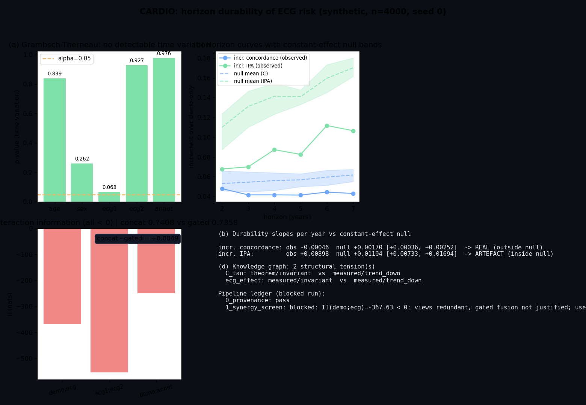

Does ECG-derived risk survive as the prediction horizon lengthens? A null-calibrated durability protocol on synthetic survival data
Implements: Preliminary investigation: forecasting cardiovascular risk from the resting ECG
Cardiovascular prevention works best long before symptoms, and the resting ECG is the cheapest cardiac test in existence — but almost every published ECG risk model reports a single-horizon number, which cannot distinguish forecasting (signal that persists) from detection (signal that fades).
Preliminary investigation: forecasting cardiovascular risk from the resting ECG (under journal revision, 2026). The statistical apparatus built for the horizon question is nearly absent from the literature: a time-varying-coefficient test appears in 0 of 2,096 screened papers, and horizon trends are reported with no reference for what the statistic does when nothing is changing.
A measurement protocol, rendered here on synthetic constant-effect proportional-hazards data: Cox PH by Newton-Raphson, the Grambsch-Therneau test for time-varying coefficients, a fixed-cohort landmark horizon grid with censoring-weighted statistics (Uno concordance, time-dependent AUC, IPCW Brier/IPA), a constant-effect null simulation calibrating every trend, an interaction-information screen gating fusion investment, and a typed knowledge graph whose structural rule fires invariance-vs-trend tensions.
| Measure (landmark) | Observed slope/yr | Null slope/yr | Null range | Explained by the metric? |
|---|---|---|---|---|
| Incremental Uno concordance | -0.00046 | +0.00170 | [+0.00036, +0.00252] | no — real drift |
| Incremental tdAUC | -0.00642 | -- | -- | -- |
| Incremental IPA | +0.00898 | +0.01104 | [+0.00733, +0.01694] | YES — artefact |
Synthetic cohort n=4000, seed 0; null = 5 constant-effect replicates (seeds 101-105). Grambsch-Therneau finds no time variation (all p > 0.05, global p=0.416). Interaction information is negative for every modality pair (demo;ecg: -367.6, ecg1;ecg2: -552.6, demo;annot: -248.5 nats), so the screen selects concatenation: Uno C 0.7408 vs 0.7358 for a gated-fusion network. The knowledge graph fires 2 structural tensions.

src/ghosh_research/cardio/
__init__.py public API
cardio.py Cox NR, GT test, Uno C, tdAUC, IPCW Brier/IPA, II screen,
ClaimGraph, GatedPipeline, gated-fusion net
cardio/paper/ PRELIMINARY_INVESTIGATION.html (paper, verbatim)
experiments/cardio_experiment.py
results/cardio/ results.md · charts.pngRun it: python experiments/cardio_experiment.py · Quickstart: python examples/11_cardio_quickstart.py